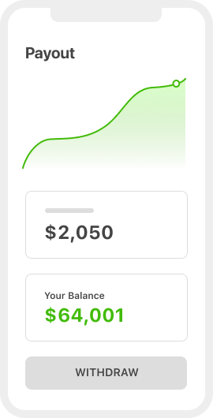
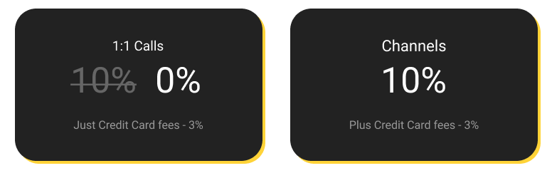

1. Pick your own schedule
You have total control over your availability.
Superpeer checks your calendar and only accepts bookings when you are free.

A video platform for the world’s leading mindsSuperpeer gives you the tools you need to have paid 1:1 video calls and livestreams with your audience and paid subscribers. |
|---|
|
1. Pick your own scheduleYou have total control over your availability. |
|---|
2. Set your rateSuperpeer automatically collects |
3. Meet right in the browserNo apps or downloads required. Simply |

|
|---|
Superpeer Channels allow you to host livestreams, build a community and
earn with recurring monthly subscriptions.

|
1. Turn your audience into subscribersSuperpeer channels are designed to
|
|---|
 |
|---|
2. Livestream with small groups or thousands of viewersSuperpeer gives you tools to let your
|
3. Earn recurring revenue through subscriptionsSell tickets to streams, introduce
|
 |
|---|
Features
Recordings High quality video and audio |
Transcription Every stream is recorded and |
No Monthly Costs Superpeer is free to use, we only mak |
|---|---|---|
No Expensive Gear Required Livestream just as easily as getting on |
Subscriber Management Tools Superpeer makes it easy for you to |
Members-only Channels You can require an approval before |
